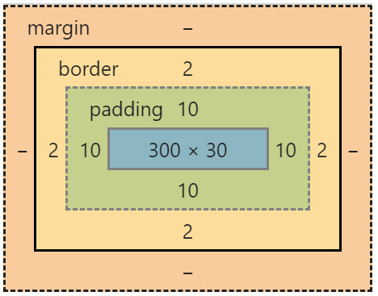

Mockup de la página

El nombre 'box-model' (modelo de caja) se llama así porque, en los navegadores, todo se construye a partir de cajas Entonces, lo primero que debemos de entender, es que cada elemento que definimos en un documento HTML se mostrará en el navegador como una caja rectangular esta es la forma en que se representan todos los elementos, no existen elementos triangulares, redondos, poligonales etc. Todos los elementos en HTML por defecto son rectangulares ya que internamente el navegador dibuja un rectángulo.
Las cajas de bloque, por defecto, ocupan todo el espacio a lo ancho del contenedor. El elemento HTML común para una caja de bloque es el elementos
Las cajas en línea, por defecto, toman el espacio según el contenido envuelto. El elemento HTML más común para una caja en línea es el elemento.